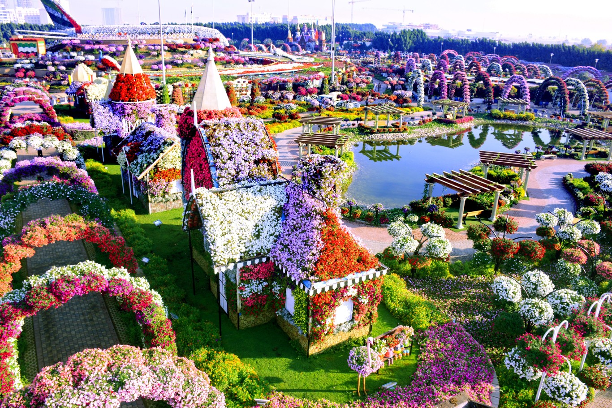
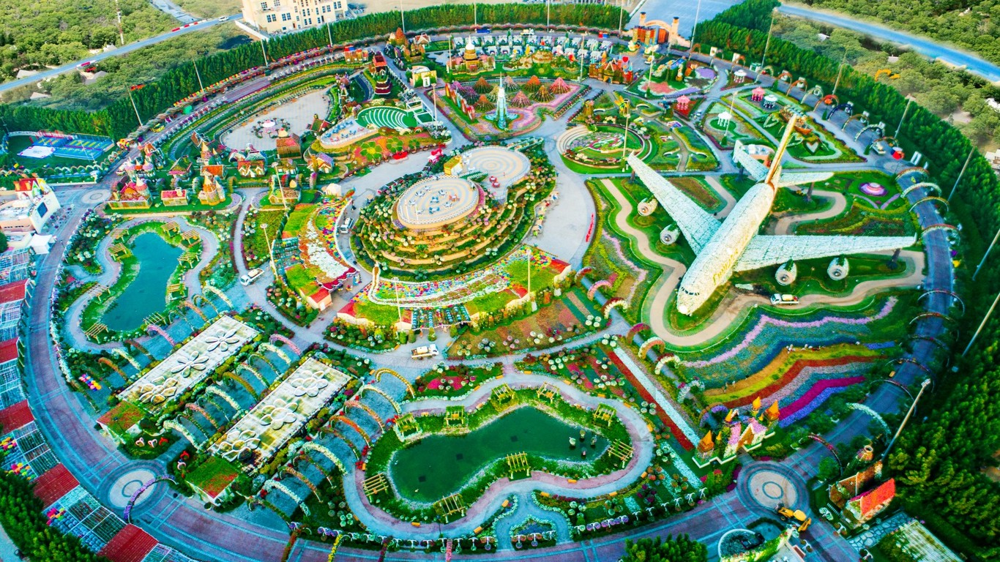

Si vas a Dubai y quieres visitar un lugar original
y diferente no puedes perderte el Dubai Miracle Garden, un jardín lleno de flores, color y extravagancia. El jardín ocupa más de 72,000 metros cuadrados y tiene más de
109 millones de flores plantadas. Este peculiar jardín se inauguró en el año 2013 en dos fases.
El Dubai Miracle Garden se abre de octubre a abril y permanece cerrado de junio a septiembre debido a las altas temperaras de la región. La flores se mantienen mediante la reutilización de aguas residuales a través del método de riego por goteo. En el año 2015 recibió el premio Moselle New Garden Experience of the Year by the Garden Tourism Awards que reconoce las jardines excepcionales y los logros en la industria del turismo de jardinería.
El parque cuenta con 45 variedades distintas de flores y los diseños verticales y horizontales visten muchas de las zonas. Hay arcos, casas, estructuras y hasta un avión repleto de flores. La explosión floral que contempla en este jardín es espectacular. El parque está dentro del libro Guiness de los Récords gracias a una pared de flores de 800 metros de largo y tres metros de altura, a un pirámide floral de 10 metros y al mayor reloj de flores del mundo. Las alfombras florales del parque dibujan flores, corazones y otros motivos llenos de colorido.
Dubai Miracle Garden consta de varias atracciones, pero las más destacables son: Butterfly Garden, un jardín con forma redonda diseñado en 3D y decorado con flores. El jardín consta de nueve cúpulas decoradas con diferentes flores y diseños. El jardín de mariposas cuenta con más de 15,000 mariposas de 26 especies. La siguiente área es el Aromatic Garden, un zona donde crecen plantas aromáticas y medicinales de más de 200 países. Los visitantes las pueden oler, tocar y hasta hacer su propia taza de té fresco. Por último, tenemos Flower Watch, un gran reloj de flores con 15 metros de diámetro hecho de plantas y flores naturales que va cambiando según cada estación del año.